新規シーンの作成と画面遷移
新規シーンの作成
早速新規でシーンを作成したいと思います。
現在のシーンがきちんと保存してあるのを確認してください。

シーンの保存ができたら新規でシーンを作成します。
プロジェクトウィンドウの＋アイコンから「Scene」を選択して下さい。
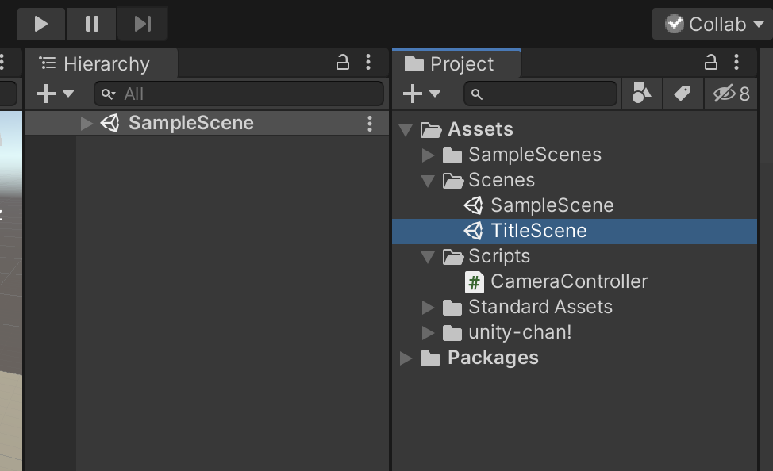
そうすると、新規のシーンが作成されるので、シーンの名前を「TitleScene」に変更してScenesフォルダの中に保存して下さい。

次に今作成したTitleSceneをダブルクリックしてこのシーンを開きます。
新規のシーンビューが表示されていれば成功です。
タイトルの表示

次にタイトル用のテキストを表示します。
まずはヒエラルキーウィンドウから「UI -> Text」を選択します。
そしてそのテキストの名前を「TitleText」に変更して下さい。
そしてインスペクターから
PosX：0
PosY：60
Width : 320
Height : 100
Text : SampleTitle
FontSize : 60
Alignment : 上下左右ともにcenter
に変更して下さい。
これで画面中央の少し上の方にタイトル用のテキストを配置することができました。
ボタンの配置
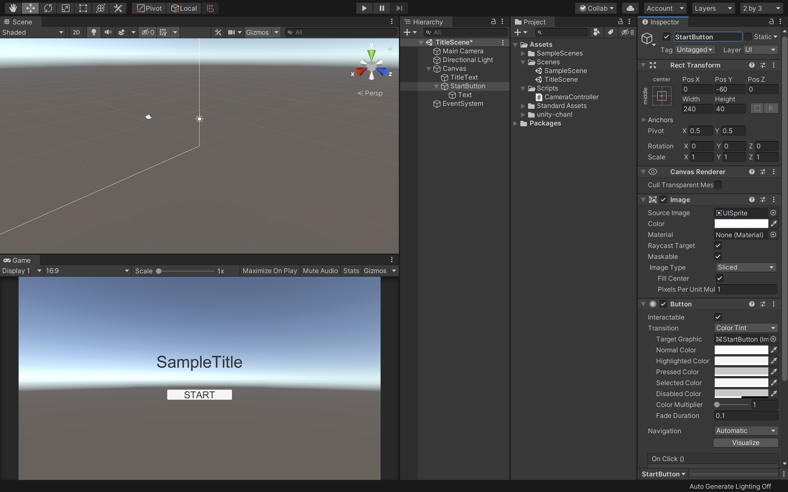
次にスタートボタンを配置したいと思います。
ヒエラルキーから「UI -> Button」を選択し、シーン内にボタンを配置します。
そしてボタンの名前を「StartButton」に変更し、
PosX : 0
PosY : -60
Width : 240
Height : 40
にして下さい。
子要素のTextも変更します。
ヒエラルキーでStartButtonの子要素のTextを選択し、
Text : START
FontSize : 32
にして下さい。
これでスタートボタンの配置は完了です。
あとはこのスタートボタンを押したら先程のSampleSceneへ画面遷移させるようにします。
画面遷移

まずは新規で空のゲームオブジェクトを作成します。
空のオブジェクトの作成方法はヒエラルキーから「CreateEmpty」を選択します。
そして、名前をGameManagerにして下さい。
GameManagerに新規でスクリプトを作成し、名前を「ScreenManager」とします。
作成したスクリプトはScriptsフォルダに格納しておいて下さい。
そしてこのScreenManagerスクリプトをVisualStudioで開きます。
そしてコードを以下のように変更して下さい。
using System.Collections;
using System.Collections.Generic;
using UnityEngine;
using UnityEngine.SceneManagement;
public class ScreenManager : MonoBehaviour
{
public void OnClickStartButton()
{
SceneManager.LoadScene("SampleScene");
}
}
まずusing UnityEngine.SceneManagement;でこのファイル内でSceneManagement機能を使えるようにしておきます。
次にOnClickStartButtonメソッドを作成します。
ここで注意してもらいたいのが、このメソッドがパブリックメソッドになっている点です。
パブリックにした理由は、このメソッドを外部（ボタン）から呼び出せるようにするためです。このメソッドをprivateにしているとこのファイル内でしか扱えなくなり、ボタンクリックで呼び出せなくなるので気をつけて下さい。
SceneManager.LoadScene("SampleScene");でSceneneManagerクラスのLoadSceneメソッドを利用してSampleSceneという名前のシーンを読み込むようにしています。LoadSceneメソッドは括弧内の引数に記述されたシーンを読み込むという命令文になっています。
ここまで記述終わりましたら保存してUnityに戻りましよう。

Unityに戻ったら、ヒエラルキーウィンドウでStartButtonを選択し、インスペクターウィンドウから「OnClick()」を見つけて下さい。
OnClick()を見つけたら、そちらの「＋」アイコンをクリックします。
こちらのOnClick()はボタンがクリックされた時の動作を設定するパラメータです。
そうすると、上記の画像のような項目が追加されますので、その空欄の部分にヒエラルキーウィンドウから「GameManager」オブジェクトをドラッグ&ドロップして下さい。
次に右側の項目から「ScreenManager -> OnClickStartButton()」を選択します。ScreenManagerが表示されない場合は、GameManagerオブジェクトにScreenManagerスクリプトがアタッチされているか確認して下さい。
OnClickStartButton()が項目にない場合はこのメソッドがきちんとパブリックメソッドになっているか確認して下さい。
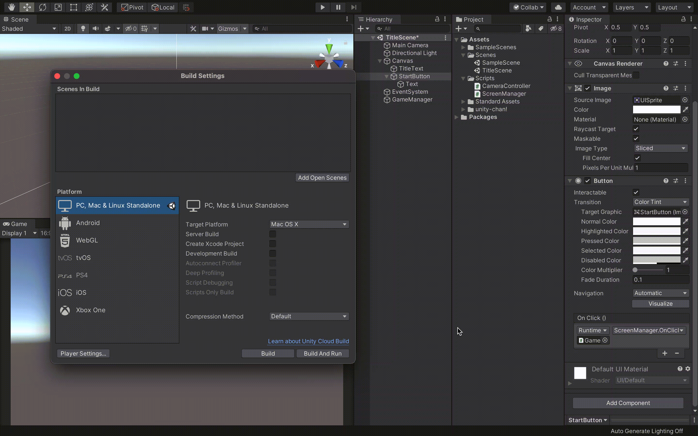
次に、シーンをBuildするシーンとして登録します。
Unityから「File -> BuildSettings」を開きましょう。
そして、右上の方にある「AddOpenScenes」をクリックして下さい。
これで現在のシーンを登録できました。
次にゲームシーンである「SampleScene」も登録します。プロジェクトウィンドウからSampleSceneをドラッグ&ドロップで「ScenensInBuild」の場所に追加して下さい。
これで登録は完了です。
順番はドラッグ&ドロップでも変更できます。
こちらのウィンドウを消してUnityを保存し、実行してみましょう。
Startボタンを押してきちんと画面遷移（Unityちゃんがいるシーンに移動）できていれば成功です。
ゲームのビルド
次に現在のUnityのプロジェクトをビルドしたいと思います。
今回はPCゲームとしてビルドしてみましょう。
ただし、このままでもビルドできるのですが１つ問題点があります。
それは現状のままアプリをビルドすると、アプリが全画面で表示され、終了させる事ができないという点です。
WebGLへのビルドはブラウザの閉じるボタンをクリックすれば終了できるのですが、PCゲームだと終了ボタンを作らないと強制終了しか終わらせる方法がありません。
ですので、今回は「ESC」ボタンを押したらアプリを終了できるように修正します。
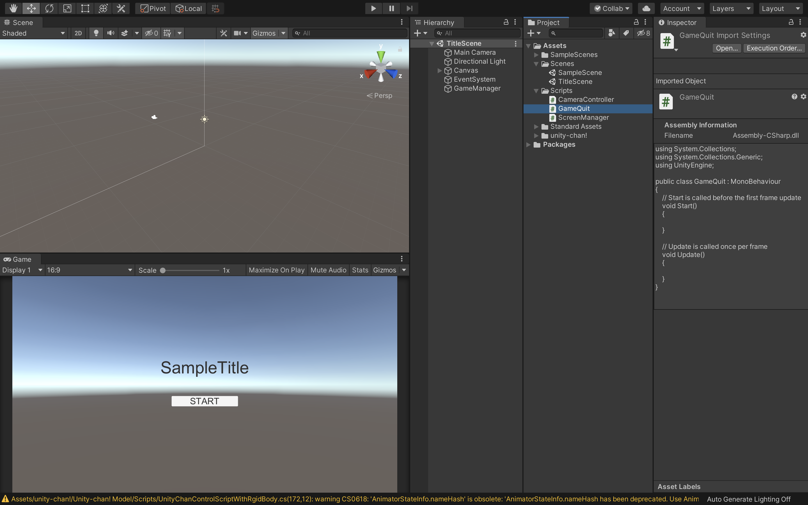
まずはプロジェクトウィンドウで新規に「GameQuit」スクリプトを作成し、Scriptsフォルダに格納して下さい。
そしてGameQuitスクリプトをVisualStudioで開き、コードを以下のように変更して下さい。
using System.Collections;
using System.Collections.Generic;
using UnityEngine;
public class GameQuit : MonoBehaviour
{
void Update()
{
if (Input.GetKey(KeyCode.Escape))
{
Application.Quit();
}
}
}
if (Input.GetKey(KeyCode.Escape))でパソコンのESCキーが押されたらという条件分岐になります。
Application.Quit();でアプリケーションを終了させるという命令文になっていますので、ESCキーが押された瞬間にこちらのアプリケーションが終了されます。
ここまでを保存してUnityに戻りましょう。

ヒエラルキーでGameManagerを選択し、インスペクターにGameQuitスクリプトをドラッグ&ドロップでアタッチして下さい。
そしてこちらのシーンを保存します。

同様にSampleSceneを開き、新しく空のGameManagerオブジェクトを作成し、GameQuitスクリプトをアタッチして保存して下さい。
これで準備か完了です。
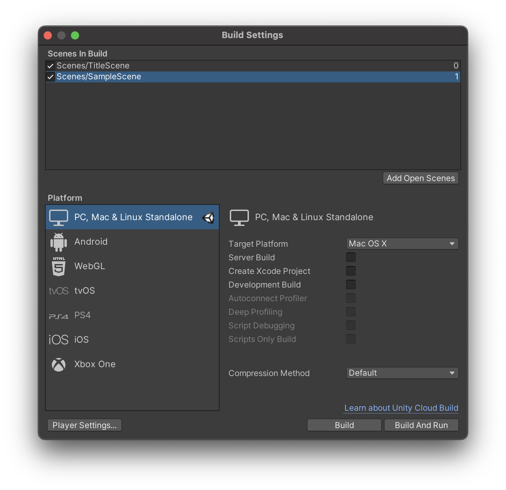
UnityのFileからBuildSettingsを開きましょう。
そしてビルドするシーンが登録されているか、ビルドするアプリケーションのプラットフォームは合っているか（今回はPC）を確認して画面右下の「Build & Run」をクリックして下さい。
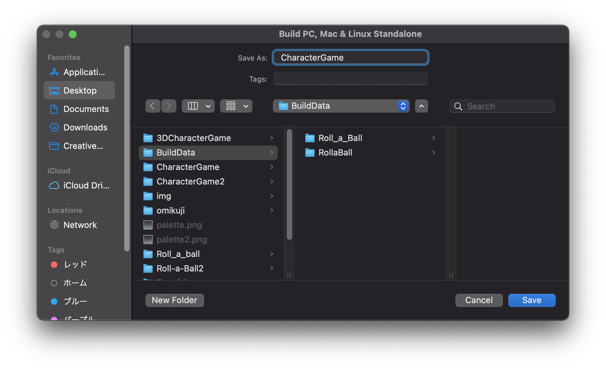
そうすると、このように保存先とアプリケーション名を入力するウィンドウが開きますので、任意の保存先とアプリケーション名を入力し、「Save」をクリックして下さい。
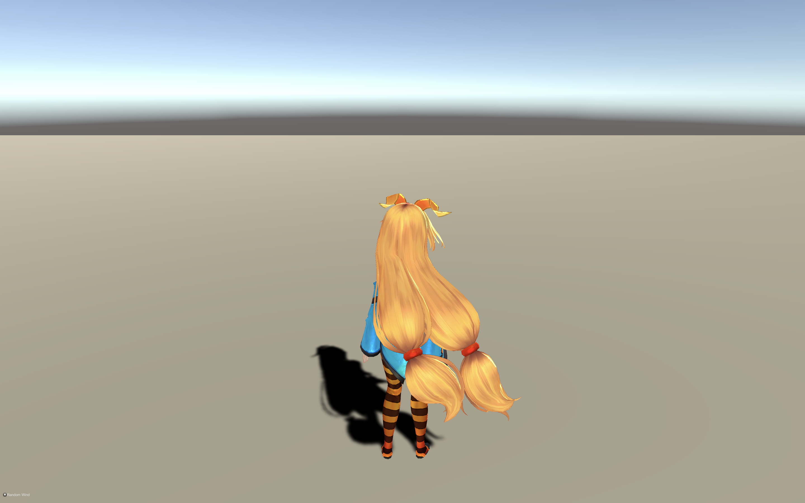
ビルドに時間がかかると思いますが、きちんとPCアプリとして実行され、ESCキーの入力で終了できていれば成功です。
<<<<<<< HEADアセットの建物を使ってみる
もしゲーム画面の風景が寂しいと感じる場合は、AssetStoreから建物の3Dデータをインポートし、使用してみましょう。
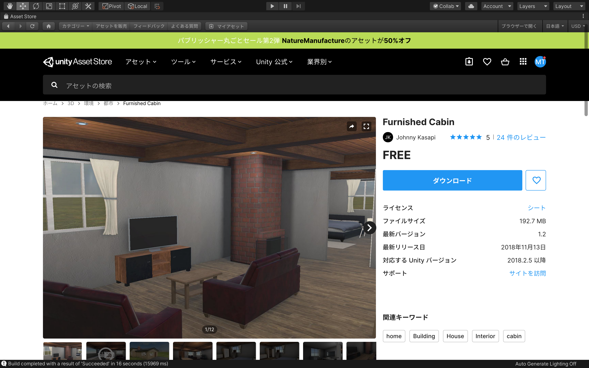
好きなものを使ってみて構わないのですが、今回は「FurnishedCabin」というアセットをダウンロードして使用してみます。
まずはこちらをAssetStoreで検索し、インポートしましょう。
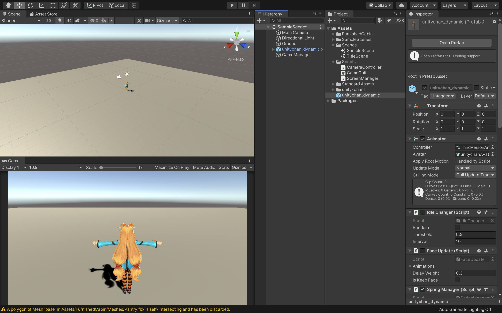
次にSampleSceneを開き、ヒエラルキーから「unitychan_dynamic」をプロジェクトウィンドウにドラッグ&ドロップしてプレハブ化しておきましょう。
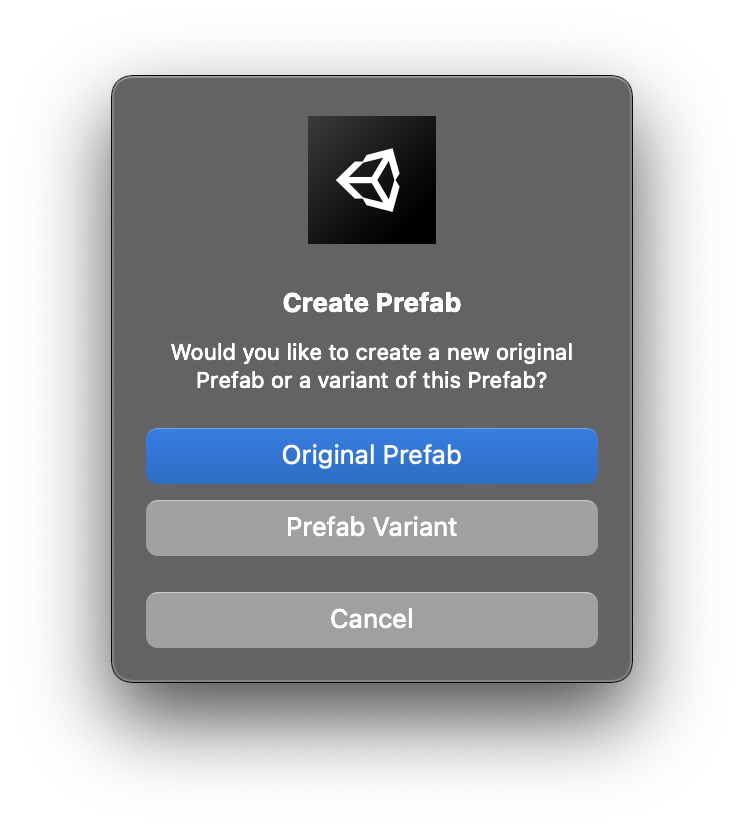
その時にこのようなウィンドウが表示されると思うので、「OriginalPrefab」を選択して下さい。これはもとのプレハブから切り離して新しいプレハブを作成するという意味です。

そうしたら今作成したunitychan_dynamicというプレハブを新しく「Prefabs」というフォルダを作成して格納しておきましょう。
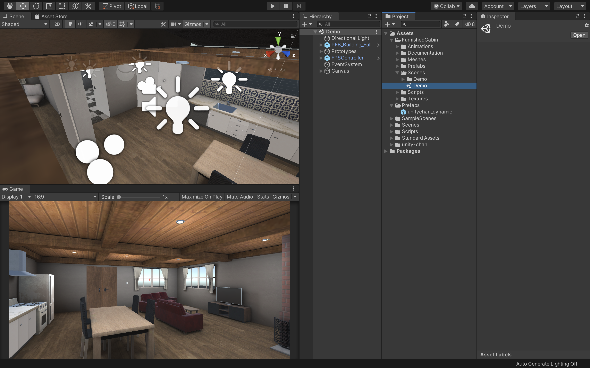
次に現在のシーンを保存し、プロジェクトウィンドウから「FurnishedCabin -> Scenes -> Demo」をダブルクリックで開いて下さい。
そうすると、このようにサンプルとして作成されているシーンが表示されます。
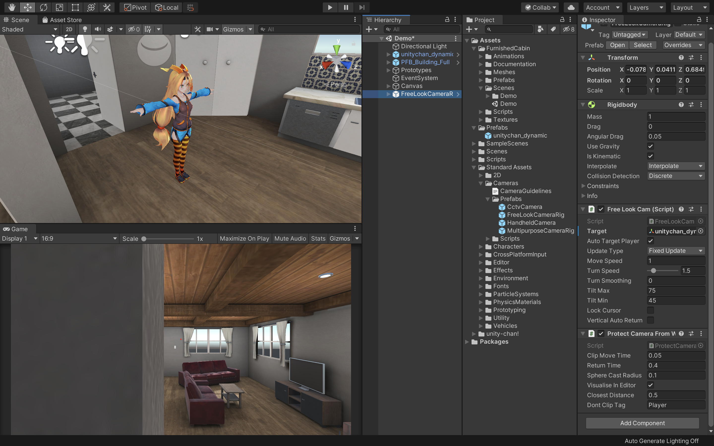
そしてプロジェクトウィンドウから先程プレハブ化した「unitychan_dynamic」と、StandardAssetsから「Cameras -> Prefabs -> FreeLookCameraRig」をヒエラルキーにドラッグ&ドロップして配置して下さい。
Unityちゃんは現在のFPSControllerと同じ場所に配置すると綺麗に写るかと思います。
そしてそのFPSControllerは不要なので削除して下さい。
最後にFreeLookCameraRigのTargetの部分にunitychan_dynamicをドラッグ&ドロップして準備完了です。
Unityを実行してみて3Dキャラクターが家の中を自由に動き回っていれば成功です。
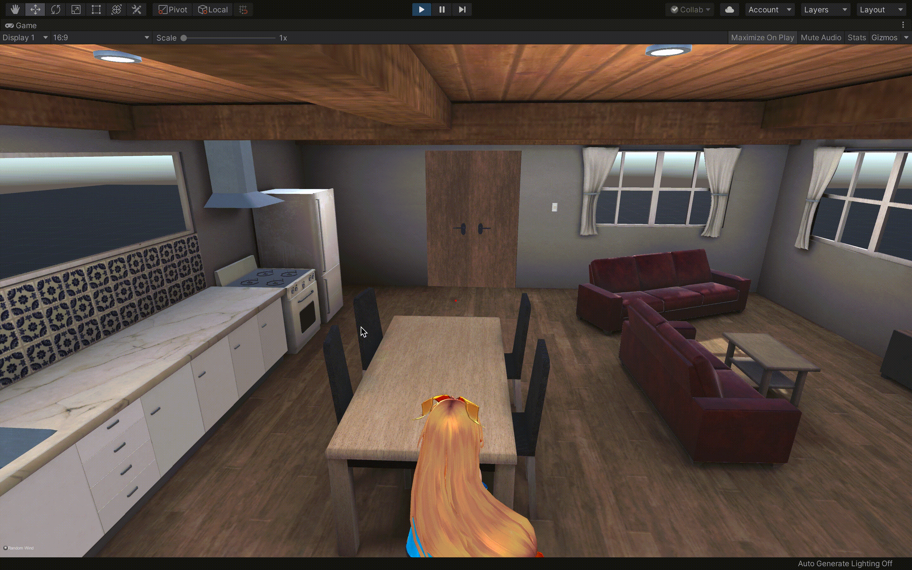
======= >>>>>>> 8f59e675345d0c37b2412bcd6966ca202f10a89b